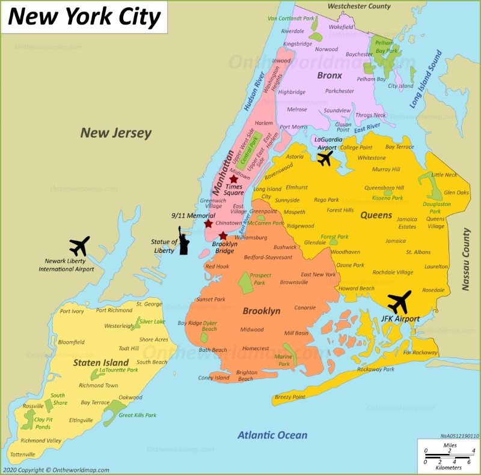

Shammel Williams was rasied in Brooklyn New York his family if from Trinidad and Tobago. Joining the Army 2 years after high school , deployed to both Iraq during Enduring Freedom campaign and in Haiti during the humanitarian crisis when they were hit by an earthquake in 2010.
